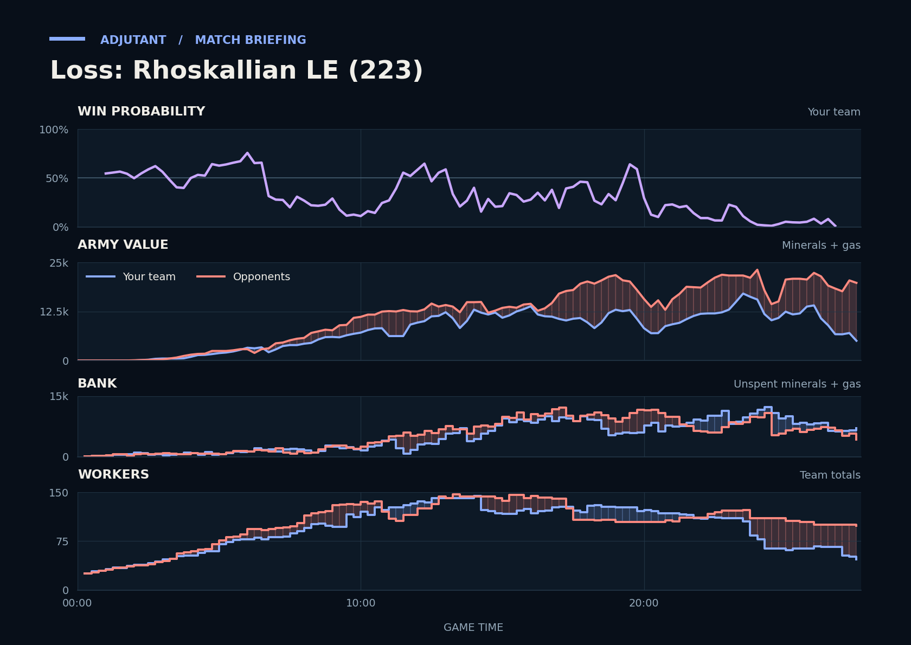

Loss: Rhoskallian LE (223)
Provisional debrief. The full report (timeline, insights and analysis) is being generated.

Cached narration uses different analysis inputs (facts, engine notes, prompts or model settings). It has not been regenerated for this report.
**Loss.** You lost the last fight around TakeTheTip's fourth and fifth, losing 3.9x as much army as CritterKill despite going in ahead.
**Why**
- 9:57–11:06: Scallop's Marines killed Critter's main Hive, costing them Hive tech until 13:30, but you lost more army.
- 18:49–20:40: Going in with about half their army value, you lost TakeTheTip's main Hive; TakeTheTip's army fell to about 1,700.
- 26:01–27:37: CritterKill's Siege Tanks, Thors and Hellions killed 31 Hydralisks and the fourth Hatchery; gg followed.
Current engine analysis: Loss. Review 18:49–20:40: you lost a fight (20,375 lost, 15,000 killed), including 7 SCVs of Scallop's; 2 of your town halls were destroyed.